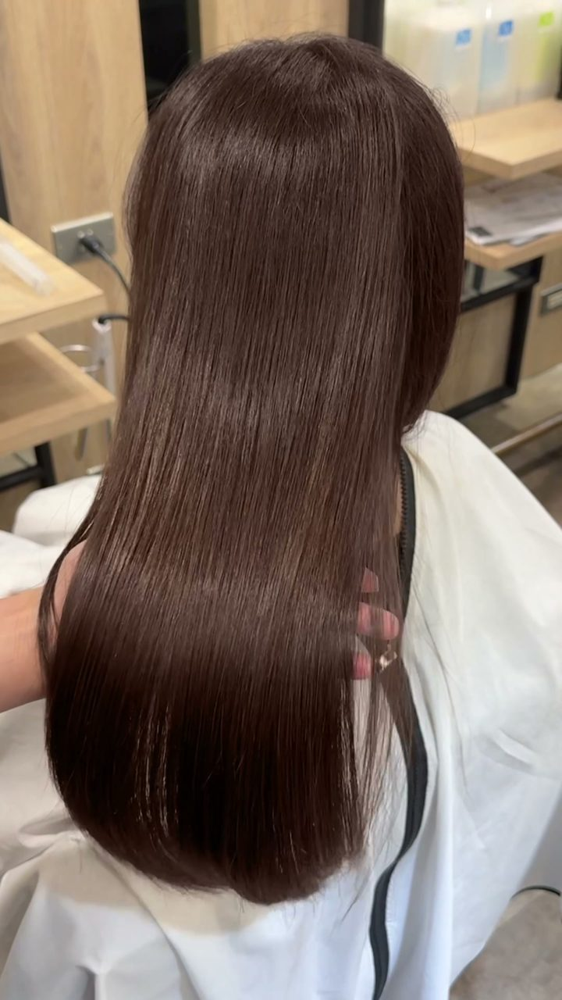
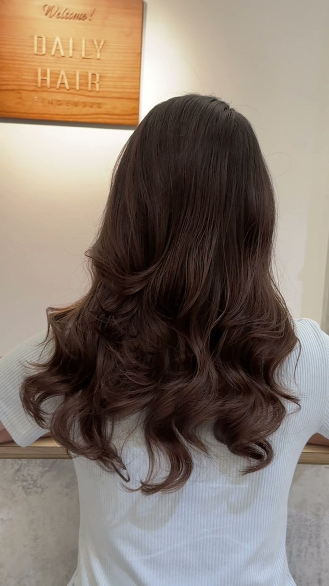
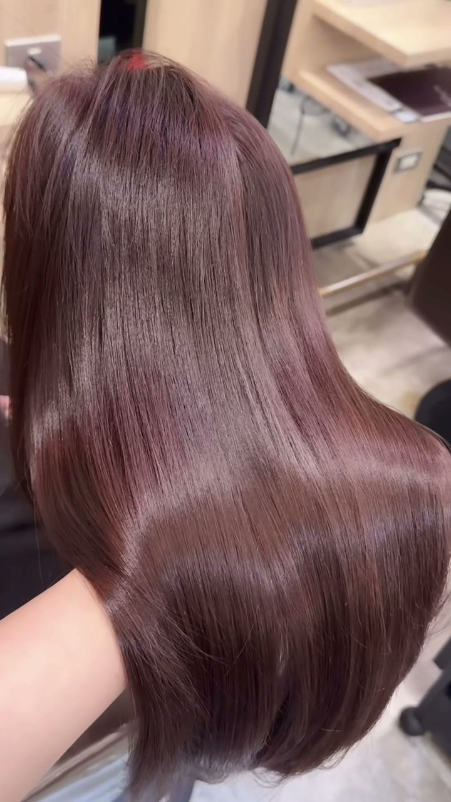
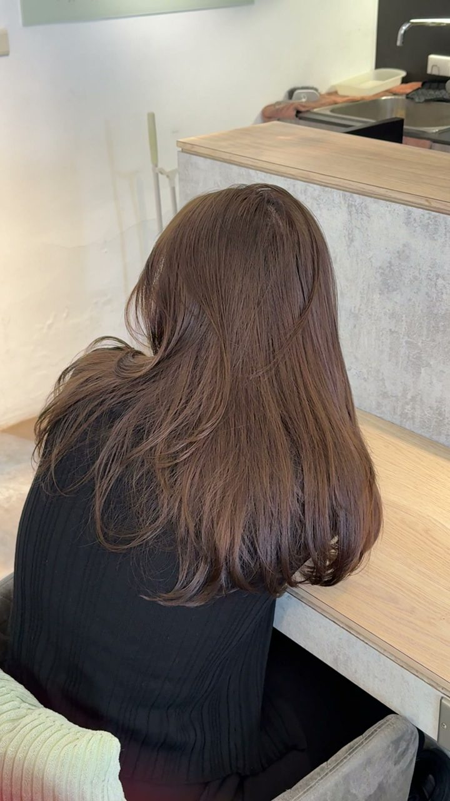
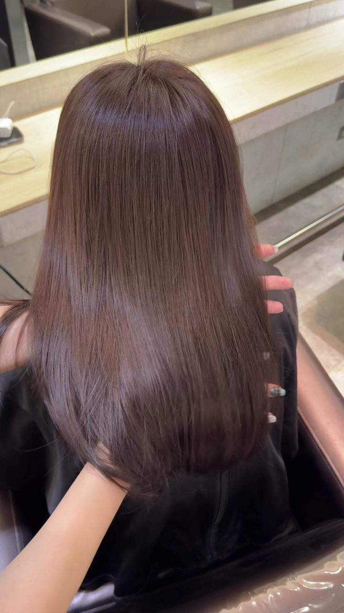
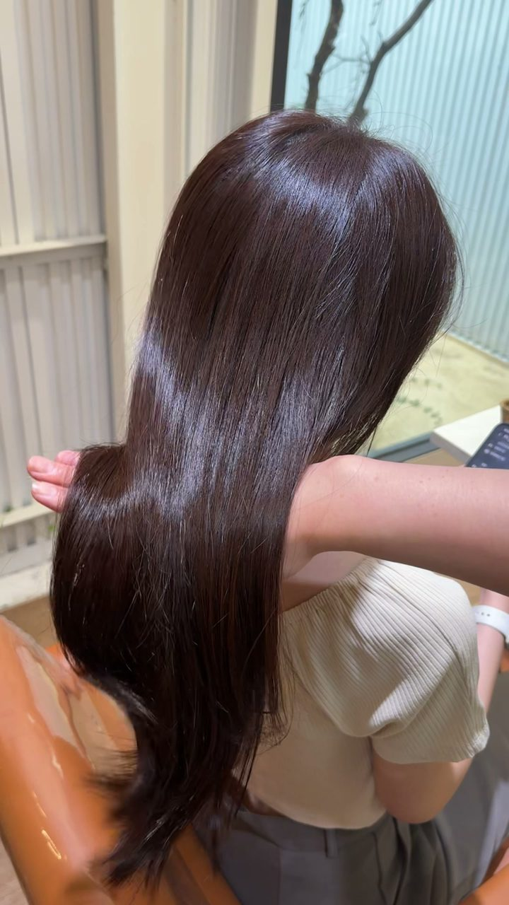

Linda 是誰
About我是 Linda，台南人，在 DAILY HAIR 美髮日常當設計師。在台北做了幾年頭髮，2026 年 6 月回到台南。
店在台南市東區大學路18巷15-3號，成大旁。我做層次燙、縮毛矯正、免漂髮色、捲度設計和護髮。
我在意的事很簡單：自然、好整理、舒服。燙完、染完，回家也好整理。
作品
Works





更多作品在 Instagram @dailyhairtaina_linda
我擅長什麼
Services層次燙（質感捲度設計）
細軟髮、容易塌的頭髮，適合層次鬆軟的捲度。先剪出層次，再燙出自然的弧度，洗完用手抓一抓就好看。適合想要好整理、不想吹很久的人。
縮毛矯正
自然捲、下雨天會炸開的頭髮。我會留一點自然的彎度，不做到貼頭皮的直，髮尾也比較柔。適合想要順、但不想要死板直髮的人。
免漂髮色
不用先漂，也能做出柔和的顏色。適合第一次染、怕傷髮、或想要乾淨髮色的人。能染到的顏色會看原本的髮況，傳照片給我，我先幫妳看。
捲度設計與柔順捲直
想要慵懶的捲度，或髮根要順、髮尾要有弧度的人。依髮長和髮質討論捲度大小。
護髮
髮質淨化卸妝、深層護髮、京喚羽 TOKIO 新京喚羽修護、黑曜光感護髮等。燙染後想補回光澤，可以一起加做。
常見問題
FAQ縮毛矯正多久要補一次？
新長出來的髮根才需要補，矯正過的地方不用再重複做。一般大約 4 到 6 個月補一次；自然捲明顯的人可能 3 到 4 個月，捲度輕微的人半年以上也有。實際要看髮質，到店我會看了再說。
頭髮細軟，可以燙嗎？
可以。細軟髮很適合層次鬆軟的燙法，重點是長度和層次怎麼剪、捲度不要太大。建議先傳頭髮的正面和側面照片給我，我評估後再決定。
免漂可以染什麼顏色？
適合柔和的棕色系。比原本髮色亮很多的顏色，通常需要先去色，我會先跟妳說清楚。髮況不同，結果也不同，所以建議先傳照片。
做一次要多久？
依項目、髮長和髮量不同。預約時我會回覆大概的時間，讓妳可以安排行程。
怎麼預約？
加我的 LINE，點下方選單「預約表格」，照範本填好送出（姓名、電話、服務項目、日期、時段、髮長與目前髮況，可附照片）。我回覆時間和估價，確認後就約好了。我服務客人時沒辦法即時回覆，看到訊息會盡快回。
價格怎麼算？
依髮長計價，從極短到胸下分成 XS 到 XXL 六級；特殊髮況會在現場討論。LINE 選單有價目表，也可以先傳照片請我估價。
店在哪裡、怎麼去？
台南市東區大學路18巷15-3號，成大旁。附近有大學路18巷北段停車場、大學路東段停車場、長榮路三段停車場。
店在這裡
Visit- 店名
- DAILY HAIR 美髮日常
- 地址
- 台南市東區大學路18巷15-3號（成大旁）・開地圖導航
- 營業
- 週三至週日；週一、週二公休
- 電話
- 06 208 9912
- 預約
- 加 Linda 的 LINE
- 作品
- Instagram・Threads
店裡還有設計師安妮和葉子，各自有自己的客人與風格。